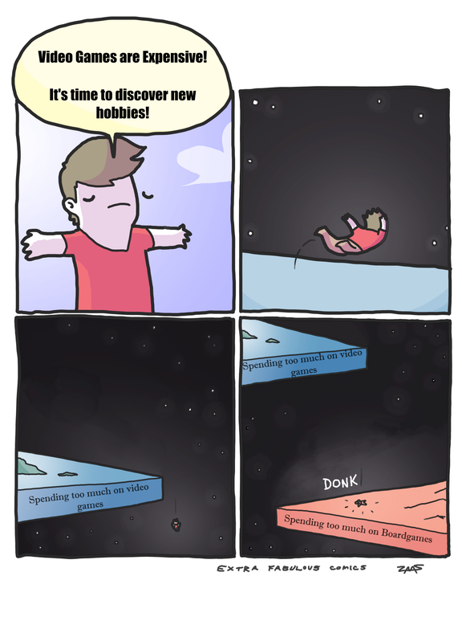

Gaming
I spend a lot of my free time playing games with friends. I grew up playing video
games with my friends and board games with my brother and cousins. I enjoy
playing team video games. I grew up playing team sports and I enjoy the
collaborative atmosphere and comradery that comes with it. It's a great way to
stay in contact with friends who I am no longer near.
When it comes to board
games, I will give just about any game a chance, but my favorite are the ones that
require planning, strategy, and the ability to adapt. I will play party games occasionally,
but they are not my favorite. Some of my favorites are
Ticket to Ride, Coup,
and Kingdomino.

Cooking
We need food to survive, so why not enjoy it. Growing up,
I would help my mom cook certain meals and I loved to bake so I could
satisfy my sweet tooth. When I started living off campus in college, I started
really getting into cooking. I try to rarely eat out and make at least one
real meal (read as not cereal) each day.
I have to credit a lot of my cooking inspiration to
Binging with Babish.
He has a great sense of humor and makes delicious food that I recreate
fairly regularly. Some of my favorite things to make are fried chicken,
pretzels, and garlic and butter basted steak.